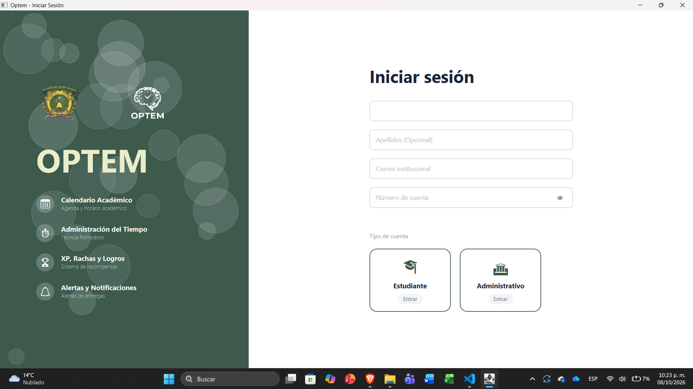
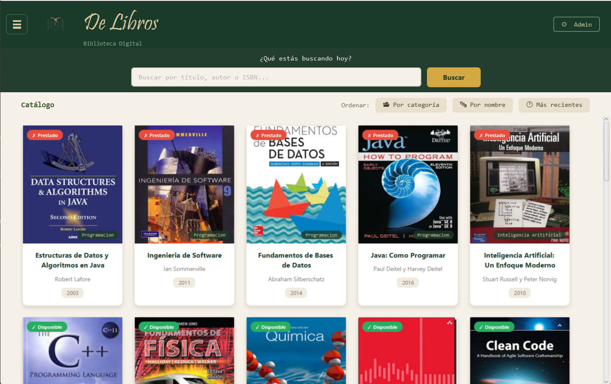

Tienda Black Brothers
[Reducción del 30% en discrepancias]

Licenciado en Ingeniería de Software que lidera equipos y proyectos para convertir necesidades del negocio en sistemas confiables, medibles y listos para crecer. Transformo ideas en soluciones de negocio y arquitectura escalable.
Indicadores clave
Competencias
Casos reales donde el liderazgo y la arquitectura resolvieron retos de negocio.
[Reducción del 30% en discrepancias]

[Optimización del 40% en planificación]

[100% de precisión léxica]

[−50% en tiempo de trámite]
Comprometido con convertir necesidades de negocio en soluciones sostenibles y de alto impacto.
Hola, soy Oscar Mauricio Ramos García. Soy Licenciado en Ingeniería de Software y me enfoco en planear, coordinar y entregar proyectos con estándares de calidad, guiando equipos multidisciplinarios hacia resultados medibles.
¿Tienes un proyecto en mente o buscas sumar liderazgo a tu equipo? Conversemos.
Sistema de Gestión Comercial y Control de Inventarios
Los procesos manuales de control de inventario y registro de ventas provocaban mermas, errores humanos y lentitud en la atención a los clientes.
Implementación de un sistema de gestión integral para automatizar el flujo de caja, el control de stock en tiempo real y la generación de reportes comerciales.
Ingeniero de Software y jefe de proyecto, responsable del diseño de bases de datos relacionales, validación de integridad y pruebas de rendimiento operativo.
Resultado medible: Reducción del 30% en discrepancias de inventario.
Agenda Virtual Inteligente para la Gestión Académica
La saturación de actividades académicas y la falta de centralización en la gestión de horarios generaban desorganización y retrasos en el cumplimiento de metas.
Desarrollo de una aplicación de escritorio local estructurada bajo una arquitectura modular robusta en Java y SQLite para automatizar la calendarización y centralizar tareas.
Líder de desarrollo y arquitectura, encargado del análisis de requerimientos (FPA), modelado del sistema y coordinación de la lógica de negocio.
Resultado medible: Optimización del 40% en planificación semanal.
Herramienta de Análisis Léxico y Sintáctico
La necesidad de procesar y validar sintácticamente instrucciones de lenguajes personalizados requería una herramienta de análisis eficiente y automatizada.
Diseño de un compilador de estructura ligera capaz de realizar análisis de tokens, validación de reglas formales y generación de reportes de errores estructurados.
Desarrollador principal de la lógica de compilación, aplicando autómatas y principios de lenguajes formales para asegurar un procesamiento riguroso.
Resultado medible: 100% de precisión en detección de errores.
Sistema Automatizado de Préstamos y Control Bibliotecario
La lentitud en los procesos de préstamo, devolución y rastreo de acervo bibliográfico afectaba la disponibilidad de recursos para los usuarios.
Creación de un software automatizado de control bibliotecario que agiliza el registro de usuarios, el catálogo de libros y el control estricto de fechas de entrega.
Líder técnico, a cargo del diseño de la interfaz de usuario orientada a la experiencia del operador y la estructuración lógica de los módulos de control.
Resultado medible: Disminución del tiempo de trámite en más de 50%.
Certificaciones oficiales y acreditaciones profesionales
Licenciado en Ingeniería de Software · CV Ejecutivo
Ingeniero de Software enfocado en la arquitectura de sistemas, gestión de proyectos y control de calidad bajo estándares rigurosos.